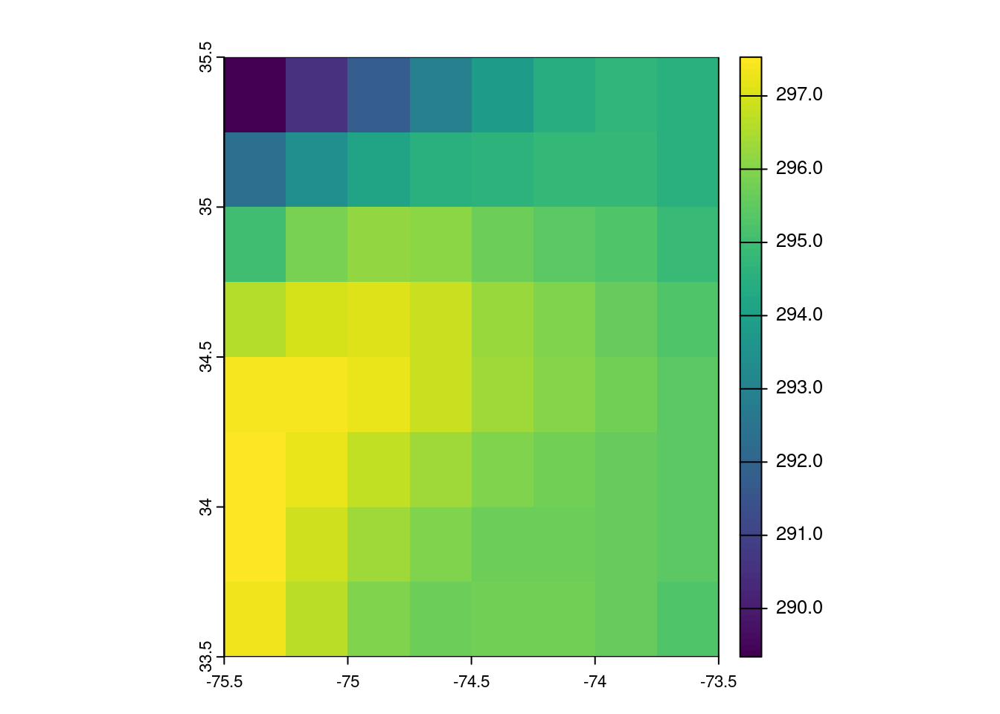
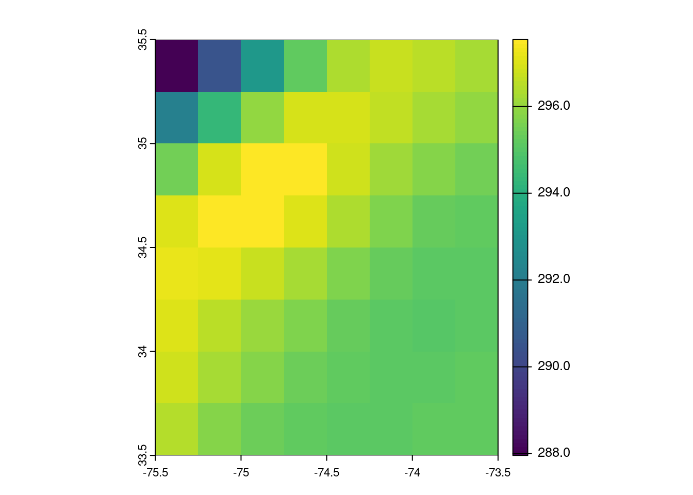

library(earthdatalogin)
library(lubridate)
library(terra)
Learning Objectives
- How to crop a single data file
- How to create a data cube with
terra - How to crop a data cube to a box
Summary
Once we have a terra SpatRaster, there are many things we can do with it like aggregation, sampling, means and interpolation.
Prerequisites
See the 1-earthdatalogin tutorial for set-up if you are running the tutorial locally.
Load Required Packages
Get a vector of urls to our nc files
Authenticate.
earthdatalogin::edl_netrc() Get the urls. The results object is a vector of urls pointing to our netCDF files in the cloud. Each netCDF file is circa 670Mb.
short_name <- 'AVHRR_OI-NCEI-L4-GLOB-v2.1'
bbox <- c(xmin=-75.5, ymin=33.5, xmax=-73.5, ymax=35.5)
tbox <- c("2020-01-20", "2020-02-10")
results <- earthdatalogin::edl_search(
short_name = short_name,
version = "2.1",
temporal = tbox,
bounding_box = paste(bbox,collapse=",")
)
length(results)[1] 23Create a data cube
I will get 10 days of data and crop to a small area.
e <- terra::ext(c(xmin=-75.5, xmax=-73.5, ymin=33.5, ymax=35.5 ))
ras <- terra::rast(results, vsi=TRUE)
ras <- terra::crop(ras, e)["analysed_sst"]Plot the first day.
plot(ras[[1]])
Raster summary
mean, max, var etc of a SpatRaster returns a single SpatRaster.
mean(ras)class : SpatRaster
dimensions : 8, 8, 1 (nrow, ncol, nlyr)
resolution : 0.25, 0.25 (x, y)
extent : -75.5, -73.5, 33.5, 35.5 (xmin, xmax, ymin, ymax)
coord. ref. : lon/lat WGS 84
source(s) : memory
name : mean
min value : 287.9596
max value : 297.5391 plot(mean(ras))
Global summary
g <- terra::global(ras, mean, na.rm=TRUE)
g mean
analysed_sst 295.4739
analysed_sst.1 295.4770
analysed_sst.2 295.5378
analysed_sst.3 295.7533
analysed_sst.4 296.2651
analysed_sst.5 296.2378
analysed_sst.6 296.2144
analysed_sst.7 296.1822
analysed_sst.8 295.9805
analysed_sst.9 295.8164
analysed_sst.10 295.7742
analysed_sst.11 295.4317
analysed_sst.12 295.0430
analysed_sst.13 294.8886
analysed_sst.14 295.2201
analysed_sst.15 295.4745
analysed_sst.16 295.7053
analysed_sst.17 295.7719
analysed_sst.18 295.7725
analysed_sst.19 295.9198
analysed_sst.20 295.9339
analysed_sst.21 295.4420
analysed_sst.22 295.2062You can do custom functions.
g <- global(ras, function(i) min(i) / max(i))
data.frame(date = as.Date(time(ras)), g, row.names = NULL) date global
1 2020-01-19 0.9724734
2 2020-01-20 0.9752058
3 2020-01-21 0.9786648
4 2020-01-22 0.9784272
5 2020-01-23 0.9773435
6 2020-01-24 0.9771800
7 2020-01-25 0.9779417
8 2020-01-26 0.9783383
9 2020-01-27 0.9736170
10 2020-01-28 0.9659007
11 2020-01-29 0.9614405
12 2020-01-30 0.9607350
13 2020-01-31 0.9635287
14 2020-02-01 0.9597049
15 2020-02-02 0.9513898
16 2020-02-03 0.9530059
17 2020-02-04 0.9540010
18 2020-02-05 0.9557561
19 2020-02-06 0.9588261
20 2020-02-07 0.9603808
21 2020-02-08 0.9633926
22 2020-02-09 0.9653459
23 2020-02-10 0.9651319You can get the range.
g <- terra::global(ras, range, na.rm=TRUE)
data.frame(date = as.Date(time(ras)), g, row.names = NULL) date X1 X2
1 2020-01-19 289.34 297.53
2 2020-01-20 290.27 297.65
3 2020-01-21 291.28 297.63
4 2020-01-22 291.63 298.06
5 2020-01-23 292.04 298.81
6 2020-01-24 292.04 298.86
7 2020-01-25 291.72 298.30
8 2020-01-26 291.31 297.76
9 2020-01-27 289.69 297.54
10 2020-01-28 287.51 297.66
11 2020-01-29 286.74 298.24
12 2020-01-30 286.52 298.23
13 2020-01-31 286.38 297.22
14 2020-02-01 284.85 296.81
15 2020-02-02 283.40 297.88
16 2020-02-03 283.91 297.91
17 2020-02-04 284.34 298.05
18 2020-02-05 284.93 298.12
19 2020-02-06 286.20 298.49
20 2020-02-07 286.52 298.34
21 2020-02-08 287.38 298.30
22 2020-02-09 287.48 297.80
23 2020-02-10 287.59 297.98Monthly means
# Function to convert times to year-month format
year_month <- function(x) {
format(as.Date(time(x), format="%Y-%m-%d"), "%Y-%m")
}
# Format time to Year-month for monthly aggregation
ym <- year_month(ras)
ym [1] "2020-01" "2020-01" "2020-01" "2020-01" "2020-01" "2020-01" "2020-01"
[8] "2020-01" "2020-01" "2020-01" "2020-01" "2020-01" "2020-01" "2020-02"
[15] "2020-02" "2020-02" "2020-02" "2020-02" "2020-02" "2020-02" "2020-02"
[22] "2020-02" "2020-02"# Compute raster mean grouped by Year-month
monthly_mean_rast <- terra::tapp(ras, ym, fun = mean)
# Compute mean across raster grouped by Year-month
monthly_means <- terra::global(monthly_mean_rast, fun = mean, na.rm=TRUE)
monthly_means mean
X2020.01 295.7836
X2020.02 295.5335Summary
After creating a data cube with terra and earthdatalogin, we learned how to do some basic spatial and temporal averaging. These computations are more RAM hungry than in Python and we don’t have the easy option of chunking the data like we do with dask and xarray. See the ERDDAP xarray tutorial for an example of chunking to reduce RAM requirements.